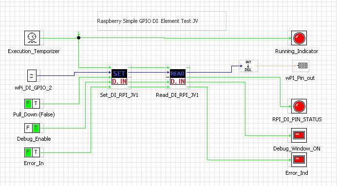
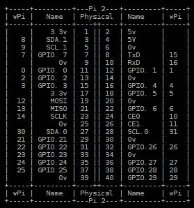

ELEMENT NAME: Set_DI_RPI_JV
DEVELOPED BY: Robinson Javier velásquez EMAIL:
javiervelasquez125@gmail.com COUNTRY: Colombia
DESCRIPTION: This element allows you to configure a Raspberry
PI GPIO pin as Digital Input and its internal resistor to Pull-up or Pull-Down.
WiringPi GPIO utility v2.32 or better is
required for use this element. (WiringPi GPIO utlity
preinstalled on Raspbian
Jessie you can see the version using "gpio -v" command in the Terminal).
This
element indicates if an error occurs and allows activate an option for
debugging, when this option is TRUE
the element launches a pop-up window to show what is happening with the
execution of the command.
BASIC DIGITAL OUTPUT EXAMPLE:

You can
find this example at Projects windows of MyOpenLab
> "VirtualMachines>Raspberry PI"
This
example shows how to use the element to configure the Wiring PI GPIO 2 (Physical
Pin 13) as digital Input with internal
resistor Pull-Down enabled.
Note: To change between Pull-Down or Pull-Up
resistor you must to set Pull_Up(T)_Pull_Down(F)_in" according to your needs, save it and restart
the VM, because the configuration VM run only the first time.
ELEMENT INPUTS:
1, "Enable_VM_in"(Boolean):
If TRUE this element executes its
function, if FALSE do not run
anything. This value is duplicated to "Enable_VM_out" pin.
2, "wPi_Pin_Number_in"(Integer):
This Input
is the corresponding GPIO Wiring PI Pin
Number to set as Digital Input or Digital Output. This value is duplicated
to "wPi_Pin_Number_out"
pin.
Wiring PI GPIO (Raspbery PI 2B y 3B) :

For
example, if you want to configure the GPIO
2 (Physical Pin 13) as Digital Input with pull-down resistor you
must connect to "wPi_Pin_Number_in" input an integer constant
"2" and connect to "Pull_UP(T)_Pull_Down(F)_in". a Bolean
FALSE constant.
3, "Pull_Up(T)_Pull_Down(F)_in"(Boolean):
This input
allows to choose if you want a Digital Input with Pull Down or Pull Up.
If TRUE the wPi_Pin_Number_in" will be configured as
Digital INPUT with Internal Pull-Up
Resistor.
If FALSE the wPi_Pin_Number_in" will be configured as
Digital OUTPUT with Internal Pull-Down
Resistor.
4, "Debug_Window_Enable_in":
If TRUE the element launches a pop-up window to show
what is happening with the execution of the command. If FALSE do not show the pop-up window. This value is duplicated to "Debug_Window_Enable_out"
pin.
5, "Error_in"(Boolean):
If FALSE this element executes its
function, but if TRUE do not run
anything and duplicate the error to the "Error_Out"
to notify the error state to the next element and avoid slow execution
caused by error propagation.
The last subVM of your program must handle the error with a pop-up
window to notify the user and take actions to fix the error.
ELEMENT OUTPUTS:
0, "Enable_VM_out"(Boolean):
This output
outs the same value that you connected to "Enable_VM_in" to notify the next element.
1, "wPi_Pin_Number_out"(Boolean):
This output
outs the same value that you connected to wPi_Pin_Number_in" to notify the next
element.
2, "System_out"(String):
This output
is the response that came from Raspbian TERMINAL but
this output may not return anything.
3, "Debug_Window_Enable_out"(Boolean):
This output
outs the same value that you connected to "Debug_Window_Enable_in" to notify the next
element.
4, "Error_out"(Boolean):
This
indicator shows TRUE if there was
error during the execution of the command entered or if the "Error_in"
was TRUE before executing this
element and FALSE if the "Error_in"
was FALSE before executing this
element and no error during the
execution of this element.